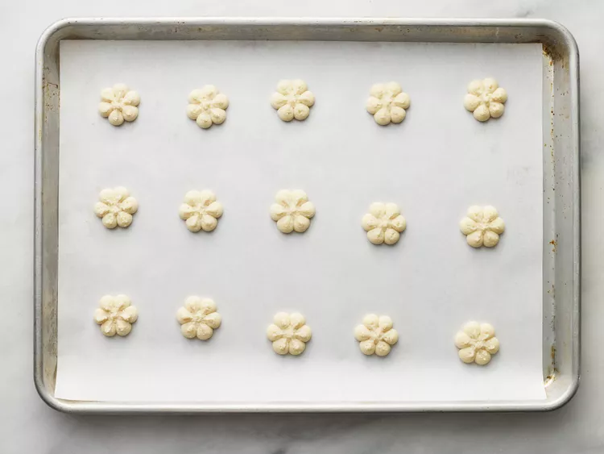

Shortbread Cookies

Description
Shortbread cookies are a classic treat known for their buttery, crumbly texture and rich flavor. These cookies are simple to make and perfect for any occasion. Whether enjoyed with a cup of tea or as a sweet snack, shortbread cookies are always a delightful choice.
Ingredients
- 1 cup unsalted butter, softened
- 1/2 cup granulated sugar
- 2 cups all-purpose flour
- 1/4 teaspoon salt
- 1 teaspoon vanilla extract (optional)
Steps
- Preheat your oven to 350°F (175°C).
- In a large bowl, cream together the butter and sugar until light and fluffy.
- Gradually add the flour and salt, mixing until the dough comes together.
- If using, mix in the vanilla extract.
- Roll the dough out on a lightly floured surface to about 1/2 inch thickness.
- Cut into desired shapes using cookie cutters.
- Place the cookies on a baking sheet lined with parchment paper.
- Bake for 10-12 minutes, or until the edges are lightly golden.
- Allow the cookies to cool on the baking sheet for a few minutes before transferring to a wire rack to cool completely.